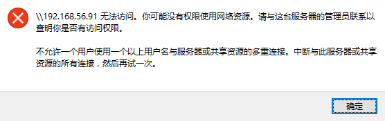

CentOS 上通过 samba 在linux 与 Windows 间共享文件
CentOS 上 Samba Server 向 Windows 共享文件
安装 Samba
1 2 3 | yum -y install samba smbd --version service smb status |
设置共享用户，以它的Home目录为共享目录
1 2 | useradd winshare passwd winshare |
share用户文件权限开放
在 /home/winshare/.bash_profile 中添加 umask 0000
1 2 3 4 5 6 7 8 9 10 11 12 | $ cat .bash_profile # Get the aliases and functions if [ -f ~/.bashrc ]; then . ~/.bashrc fi # User specific environment and startup programs PATH=$PATH:$HOME/bin export PATH # share用户文件权限开放 umask 0000 |
另外，如果从外部拷贝文件到 /home/winshare/ ，注意文件的权限。
配置 Samba
修改 vi /etc/samba/smb.conf
添加共享配置：
1 2 3 4 5 6 7 8 9 10 11 12 | [global]
security = user
passdb backend = tdbsam
wins support = yes
[winshare]
path = /home/winshare/
valid user = winshare
browsable = yes
writable = yes
public = yes
guest ok = yes
read only = no
|
添加用户到 samba 的密码文件
1 2 3 | # smbpasswd -a winshare New SMB password: Retype new SMB password: |
iptables 配置
1 2 3 4 | # 插到第7条，这个例子的第7条是reject all，所以rule要插到这条前面 iptables -I INPUT 7 -m state --state NEW -m udp -p udp --dport 137 -j ACCEPT iptables -I INPUT 7 -m state --state NEW -m udp -p udp --dport 138 -j ACCEPT iptables -I INPUT 7 -m state --state NEW -m tcp -p tcp --dport 139 -j ACCEPT |
selinux 配置
可参考 /etc/samba/smb.conf 里面的注释说明
这里使用的专有用户的home目录来共享，所以执行：
1 | setsebool -P samba_enable_home_dirs on |
启动 Samba
1 | service smb start |
CentOS 上测试
1 2 3 4 5 6 7 8 9 10 11 12 13 14 15 16 17 | # smbclient -U winshare //localhost/winshare
Enter winshare's password:
Domain=[WORKGROUP] OS=[Unix] Server=[Samba 3.6.23-45.el6_9]
smb: \> ls
. D 0 Wed Oct 11 14:53:32 2017
.. D 0 Wed Oct 11 14:30:51 2017
.bash_logout H 18 Fri Feb 22 05:09:50 2013
.bash_history H 425 Wed Oct 11 15:01:29 2017
hello.txt 0 Wed Oct 11 14:53:32 2017
.mozilla DH 0 Tue Apr 23 08:29:15 2013
.viminfo H 644 Wed Oct 11 14:35:07 2017
.bash_profile H 189 Wed Oct 11 14:35:07 2017
.gnome2 DH 0 Tue Apr 23 08:38:55 2013
.bashrc H 124 Fri Feb 22 05:09:50 2013
46922 blocks of size 1048576. 41130 blocks available
smb: \> exit
|
Windows 上测试
- 打开资源管理器
- 地址栏输入共享地址，例如：
\\192.168.56.91\winshare
在linux虚拟机上长期使用
-
linux
1
chkconfig smb on
-
windows
我的电脑 》映射网络驱动器 》 填入共享地址，例如： \\192.168.56.91\winshare
问题排查
Windows无法连接
- 可能时samba客户端没装好
- 检查 设置》启动或关闭Windows功能
- 勾选 SMB 1.0/CIFS 文件共享支持
- 勾选 SMB 直通
windows上无法写文件
- 可能是linux的权限问题（samba用户权限不能对目标文件操作）
安全设置问题
不能访问，可能是 selinux，iptables 防火墙导致的。
可以关闭安全设置解决，如不关闭，如何配置安全设置，本文不提供～就是这么任性～
selinux
临时关闭：setenforce 0
检查selinux状态： getenforce
永久关闭： 修改 /etc/selinux/config 文件，修改 SELINUX=disabled，重启
iptables
临时关闭： service iptables stop
关闭： chkconfig iptables off
Windows 报错：不允许一个用户使用一个以上用户名与一个服务器或共享资源的多重连接。
-
现象
 -
解决
关闭所有连接。1
net use * /del /y
-
参考